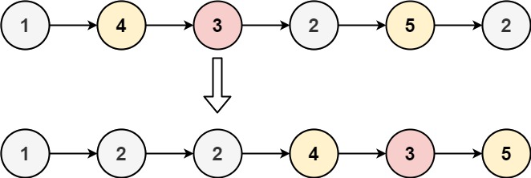

86. 分隔链表
两个哨兵各起一条链：遍历原链，< x 的结点串进 small、≥ x 的串进 large，最后 small 尾接 large 头。
思路
- 哨兵
small、large免去判空；遍历时结点原样摘下串到对应链尾，两段内部相对顺序自然保住。 - 串完先
l.next = null给大链收尾（它原来还挂着老后继，不置空会成环或带出脏结点），再s.next = large.next拼接。 - 返回
small.next。
图解
最优解
1class Solution {2 public ListNode partition(ListNode head, int x) {3 // 两条链各串各的：< x 的进 small，≥ x 的进 large，最后接起来4 ListNode small = new ListNode(), large = new ListNode();5 ListNode s = small, l = large;6 for (ListNode p = head; p != null; p = p.next) {7 if (p.val < x) { s.next = p; s = p; }8 else { l.next = p; l = p; }9 }10 // 大链收尾：防止它还挂着原来的后继结点成环11 l.next = null;12 // 小链尾接上大链头，返回 small 哨兵后面那条13 s.next = large.next;14 return small.next;15 }16}题目
给你一个链表的头节点 head 和一个特定值 x ，请你对链表进行分隔，使得所有 小于 x 的节点都出现在 大于或等于 x 的节点之前。
你应当 保留 两个分区中每个节点的初始相对位置。
示例 1：

输入：head = [1,4,3,2,5,2], x = 3 输出：[1,2,2,4,3,5]
示例 2：
输入：head = [2,1], x = 2 输出：[1,2]
提示：
- 链表中节点的数目在范围
[0, 200]内 -100 <= Node.val <= 100-200 <= x <= 200
题面取自力扣当前版本。
数据快照 2026-11-04。题面版权归力扣所有，本站点仅供本人学习使用，请勿对外发布。